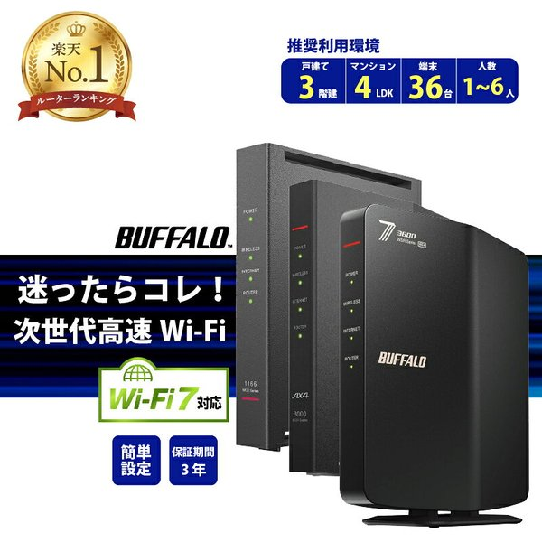
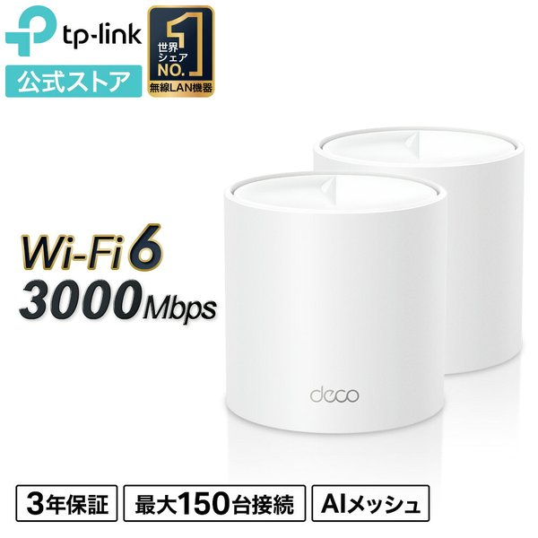
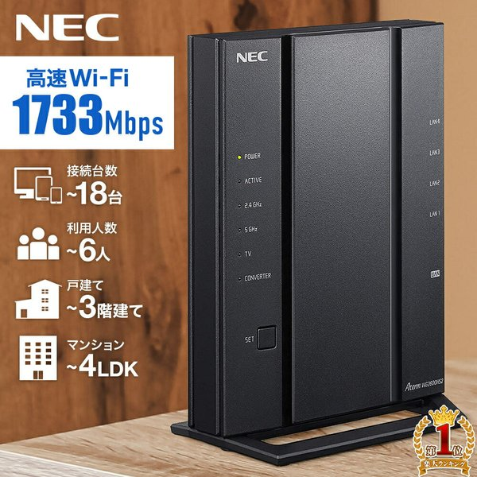
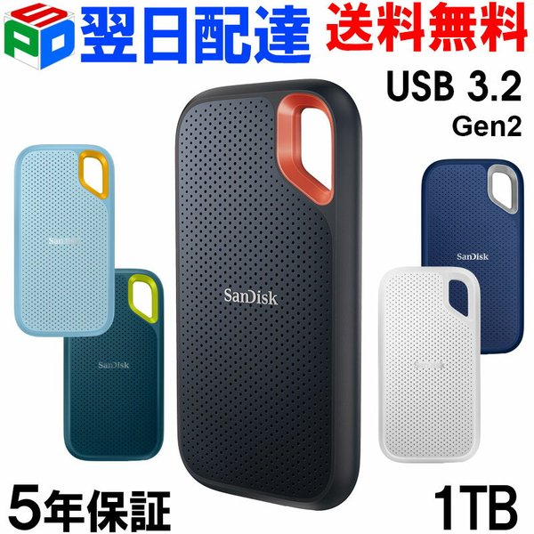
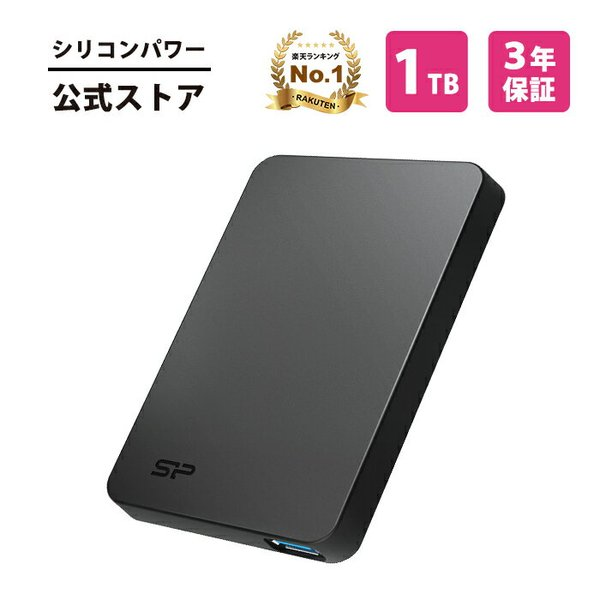
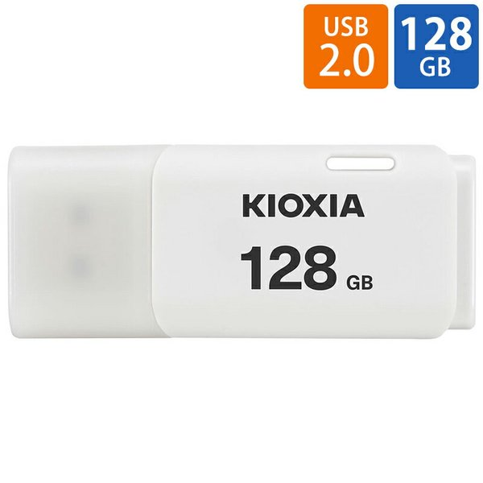
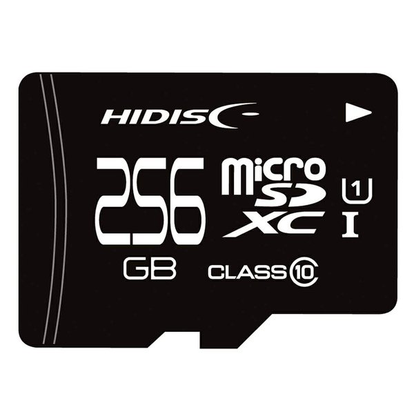
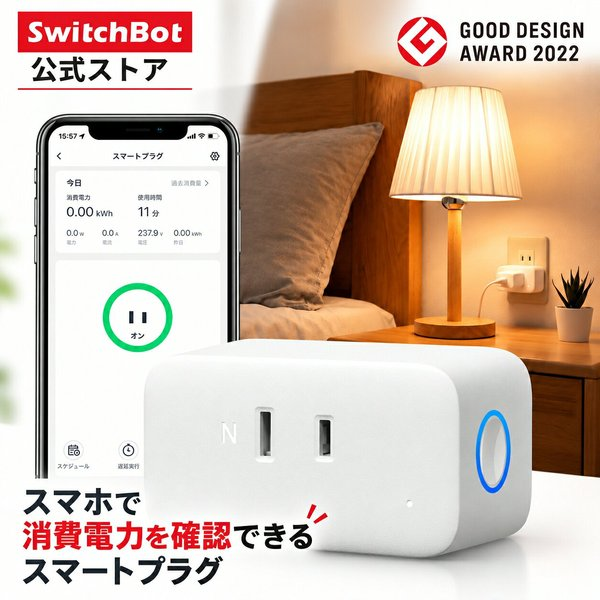
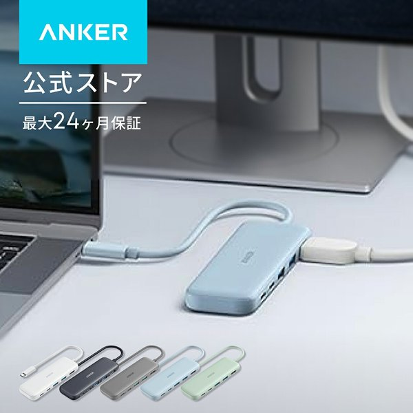

【2026年ブラックフライデー】家のネット高速化＆スマホ・PC容量不足を一発解消！Wi-Fiルーター・外付けSSD・USBメモリ10選
「動画が途中で止まる」「スマホの空き容量が10GBを切った」。この2つは、機器の買い替えでほとんど解決します。回線を変えるより先に、家の中の道具を疑うほうが早いことが多いです。
選ぶ軸は、ボトルネックがどこかを決めることです。家中どこでも遅いなら、ルーター本体かメッシュWi-Fiを替えます。2階だけ弱いなら、中継機かメッシュを足すだけで済みます。PCだけWi-Fiが遅いなら、無線LAN子機を挿すのが最短です。容量不足は、写真と動画を外付けSSDやmicroSDへ移すだけで解消します。SSDは1TBを1台持っておくと、スマホ・PC・カメラのデータを1か所に集められます。USBメモリは受け渡し用、microSDはスマホとドラレコ用と、用途で分けて持つのが結局いちばん迷いません。スマートプラグやUSBハブは、機器を増やしたときに配線と電源を整理するための道具です。
本記事では、楽天市場で人気・高評価のネットワークとストレージの10選を、実売価格とレビュー評価つきで写真付き紹介します。
- おすすめ10選 スペック・特徴比較表
- BEST 1｜Wi-Fi 6 ルーター WSR-3000AX4P（2401＋573Mbps・3年保証）
- BEST 2｜Deco X50 メッシュWi-Fi（Wi-Fi 6・2402＋574Mbps）
- BEST 3｜Wi-Fi 6 ルーター WRC-X1800GS2-B（1201＋574Mbps）
- BEST 4｜ポータブルSSD Extreme 1TB（USB3.2 Gen2・読み出し最大1050MB/s）
- BEST 5｜外付けSSD 1TB（USB3.2 Gen1・Type-A／Type-C両対応）
- BEST 6｜USBメモリ TransMemory U202 128GB（キャップ式・USB2.0）
- BEST 7｜microSDXCカード 256GB（CLASS10・UHS-I・最大90MB/s）
- BEST 8｜プラグミニ スマートプラグ（Alexa対応・タイマー付き）
- BEST 9｜332 USB-C ハブ 5-in-1（4K HDMI・100W PD・5Gbps）
- BEST 10｜Wi-Fi 6 無線LAN子機 USBアダプタ AX900（Windows対応）
- 【読者負担0円】買わなくても得する無料サービス
- まとめ：ネット高速化と容量不足解消の10選の選び方
| 順位 | 商品名 | ブランド | 最大の特徴・おすすめ理由 | 総合評価 |
|---|---|---|---|---|
| BEST 1 | Wi-Fi 6 ルーター WSR-3000AX4P（2401＋573Mbps・3年保証） | バッファロー（BUFFALO） | 5GHz 2401MbpsのWi-Fi 6対応 | 4.62 |
| BEST 2 | Deco X50 メッシュWi-Fi（Wi-Fi 6・2402＋574Mbps） | TP-Link | 1つのSSIDのまま家中をつなぐ | 4.58 |
| BEST 3 | Wi-Fi 6 ルーター WRC-X1800GS2-B（1201＋574Mbps） | エレコム（ELECOM） | 8,000円台のWi-Fi 6ルーター | 4.42 |
| BEST 4 | ポータブルSSD Extreme 1TB（USB3.2 Gen2・読み出し最大1050MB/s） | SanDisk | 読み出し最大1050MB/s | 4.49 |
| BEST 5 | 外付けSSD 1TB（USB3.2 Gen1・Type-A／Type-C両対応） | シリコンパワー | 1TBを2万円台で買える | 4.32 |
| BEST 6 | USBメモリ TransMemory U202 128GB（キャップ式・USB2.0） | KIOXIA（キオクシア） | 128GBで書類・写真の受け渡しに十分 | 4.61 |
| BEST 7 | microSDXCカード 256GB（CLASS10・UHS-I・最大90MB/s） | HIDISC（磁気研究所） | 256GBの大容量 | 4.67 |
| BEST 8 | プラグミニ スマートプラグ（Alexa対応・タイマー付き） | SwitchBot | 声とスマホから電源を操作 | 4.35 |
| BEST 9 | 332 USB-C ハブ 5-in-1（4K HDMI・100W PD・5Gbps） | Anker | 4K HDMIと100W PDを同時に使える | 4.37 |
| BEST 10 | Wi-Fi 6 無線LAN子機 USBアダプタ AX900（Windows対応） | UGREEN | 挿すだけでWi-Fi 6に対応 | 4.49 |
Wi-Fi 6 ルーター WSR-3000AX4P（2401＋573Mbps・3年保証）

バッファローのWi-Fi 6ルーターで、5GHzが最大2401Mbps、2.4GHzが573Mbps。3階建ての戸建てや4LDKのマンションを想定した設計で、同時接続は21台まで対応します。WPA3に対応し、端末ごとに時間帯を決めて接続を制限する機能も付いています。Wi-Fi EasyMeshに対応しているので、家中に電波が届かない場合は対応する中継機を足すだけで mesh を組めます。3年保証付きで、ルーターの買い替えとしては長く使える1台です。楽天市場での実売価格は約6,900円（2026年11月時点）。
- 5GHz 2401MbpsのWi-Fi 6対応
- 3年保証付き
- Wi-Fi EasyMeshで中継機を足せる
- レビューは3,678件と多いが、設定はスマホアプリ前提の部分がある
Deco X50 メッシュWi-Fi（Wi-Fi 6・2402＋574Mbps）

2台以上を家中に置いて、ひとつのSSIDでつなぐメッシュWi-Fiシステムです。廊下や2階へ移動しても、電波の強い機器に自動で切り替わるため、オンライン会議や動画が途切れにくくなります。Wi-Fi 6対応で5GHzは最大2402Mbps。既存のルーターの後ろに繋ぐだけで使えるので、プロバイダの機器をそのまま活かせます。戸建てで「2階だけ電波が弱い」と悩んでいる家に向いています。楽天市場での実売価格は約16,600円（2026年11月時点）。
- 1つのSSIDのまま家中をつなぐ
- Wi-Fi 6で5GHz最大2402Mbps
- 既存ルーターの後ろに繋ぐだけ
- レビューは187件で、台数ぶんの電源と置き場所が必要になる
Wi-Fi 6 ルーター WRC-X1800GS2-B（1201＋574Mbps）

エレコムのWi-Fi 6ルーターで、5GHzが最大1201Mbps、2.4GHzが574Mbps。IPv6に対応し、1LDK〜2LDKのマンションや、実家のルーター買い替えに向いた価格帯です。省スペースの縦置きデザインで、テレビボードの脇に置いても邪魔になりません。まずは手頃な価格でWi-Fi 6に切り替えたい、という人の最初の1台になります。楽天市場での実売価格は約1,980円（2026年11月時点）。
- 8,000円台のWi-Fi 6ルーター
- 縦置きできる省スペース設計
- IPv6対応
- レビューは9件と少なく、口コミはこれから増える段階
ポータブルSSD Extreme 1TB（USB3.2 Gen2・読み出し最大1050MB/s）

手のひらサイズの外付けSSDで、読み出しは最大1050MB/s。内蔵SSDに近い速度が出るため、動画の編集データを直接ここに入れて作業できます。スマホやタブレットに繋げば、撮った写真や動画を本体から移せるので、容量不足の解消にもなります。1TBあれば、4K動画やRAW写真をまとめて保管しても余裕があります。楽天市場での実売価格は約31,880円（2026年11月時点）。
- 読み出し最大1050MB/s
- 1TBで動画もまとめて保管できる
- スマホ・タブレットからも移せる
- レビューは45件と少なく、価格は1TBのSSDでは高め
外付けSSD 1TB（USB3.2 Gen1・Type-A／Type-C両対応）

1TBの外付けSSDを2万円台前半で買えるモデルです。USB 3.2 Gen1対応で、Type-AとType-Cの両方のケーブルが付属するため、PCでもスマホでも同じSSDを使えます。写真や書類のバックアップ用に、もう1台欲しいときに向いています。SSDは衝撃に強く、HDDのようにカリカリ音が鳴らないので、持ち歩きのストレージとしても安心です。楽天市場での実売価格は約24,680円（2026年11月時点）。
- 1TBを2万円台で買える
- Type-AとType-Cの両対応
- 持ち歩きやすいSSD
- レビューは44件と少なく、Gen1のため速度は上位モデルに劣る
USBメモリ TransMemory U202 128GB（キャップ式・USB2.0）

キオクシアのUSBメモリ128GBです。USB 2.0対応で速度は控えめですが、書類や写真の受け渡しには十分な容量。キャップ式で端子がむき出しにならず、バッグに入れても傷が付きにくいのが利点です。仕事の資料を渡す、写真を家族に渡す、といった「受け渡し用」に1本持っておくと困りません。楽天市場での実売価格は約2,299円（2026年11月時点）。
- 128GBで書類・写真の受け渡しに十分
- キャップ式で端子を保護
- 2,299円の価格
- レビューは438件で、USB2.0のため大容量ファイルの転送は遅い
microSDXCカード 256GB（CLASS10・UHS-I・最大90MB/s）

スマホやタブレット、ドライブレコーダーに使える256GBのmicroSDカードです。CLASS10とUHS-Iに対応し、読み出しは最大90MB/s。日本語パッケージの国内正規品なので、対応機器の表記が読みやすく、初めての増設でも選びやすいです。スマホの写真と動画を本体から移せば、アプリの更新や新しい撮影のための空き容量をまとめて確保できます。楽天市場での実売価格は約4,399円（2026年11月時点）。
- 256GBの大容量
- CLASS10・UHS-I対応
- 日本語パッケージの国内正規品
- レビューは30件と少なく、4K動画の常時録画には速度が足りない
プラグミニ スマートプラグ（Alexa対応・タイマー付き）

コンセントに挿すだけで、家電の電源をスマホから操作できるスマートプラグです。AlexaやGoogleアシスタントに対応し、声でオン・オフを指示できます。タイマーを設定すれば、加湿器や電気毛布を決まった時間だけ動かせます。冬の朝、布団から出る前に暖房を点ける、といった使い方ができ、帰宅時の室温が変わります。楽天市場での実売価格は約1,880円（2026年11月時点）。
- 声とスマホから電源を操作
- タイマーで決まった時間だけ動かせる
- 1,880円で試しやすい
- レビューは450件で、接続する家電の消費電力の上限は確認が必要
332 USB-C ハブ 5-in-1（4K HDMI・100W PD・5Gbps）

ノートPCのType-C端子を5つに増やすハブです。4KのHDMI出力、100WのPD充電、USB-A 2口、USB-Cデータポートを備え、給電しながらモニターとキーボードを繋げます。5Gbpsの高速転送に対応し、外付けSSDやSDカードリーダーを繋いでも速度が落ちにくいのが利点です。デスクに置いておけば、PCを1本のケーブルで繋ぐだけで済みます。楽天市場での実売価格は約2,690円（2026年11月時点）。
- 4K HDMIと100W PDを同時に使える
- 5Gbpsの高速データ転送
- Ankerの24か月保証付き
- レビューは131件で、HDMI出力は4K30Hzまで
Wi-Fi 6 無線LAN子機 USBアダプタ AX900（Windows対応）
デスクトップPCや、Wi-Fiの古いノートPCに挿すだけでWi-Fi 6が使えるようになるUSBアダプタです。5GHzで600Mbps、2.4GHzで287Mbpsに対応し、有線LANが引けない部屋でもネットに繋げます。親機のルーターを新しくしたのに、PCだけ速度が出ないという場合の最終ピースになります。1,780円で、有線工事をせずに済みます。楽天市場での実売価格は約1,780円（2026年11月時点）。
- 挿すだけでWi-Fi 6に対応
- 5GHz 600Mbps対応
- 1,780円で有線工事が不要に
- レビューは140件で、対応OSはWindowsに限られる
この記事の商品を買う前に、まずは無料で得する選択肢をチェック。どれも登録・利用は0円で、無料期間中に解約すれば料金はかかりません。読みたい雑誌がある人、ポイントを貯めたい人、アンケートなら気軽という人、それぞれに合うものを選べます。
初回31日無料・無料期間中に解約すれば0円 → 楽天ポイントモール｜登録無料で毎日ポイ活
買い物なしでもポイントが貯まる無料サービス → 楽天インサイト｜アンケートに答えてポイント
登録無料・すきま時間のアンケートで貯まる → 楽天カード｜年会費永年無料
新規発行・年会費ずっと0円 →
4つのサービスの違いと使い分けは「出費0円で得する！買わずにポイントが貯まる無料サービス厳選4選」でまとめています。
💡 まとめ：ネット高速化と容量不足解消の10選の選び方
ネットの不満は、回線を変えなくても解決できます。まずルーターの型番を確認し、Wi-Fi 5以前ならWi-Fi 6の機器に替えてください。それでも届かない部屋があるなら、メッシュWi-Fiか中継機を足します。デスクトップPCだけ遅い場合は、無線LAN子機を挿すのがいちばん安く済みます。容量不足は、外付けSSDに写真と動画を移すだけで解消します。1TBを1台用意しておけば、スマホの機種変更のときもデータの引っ越しが楽になります。USBメモリとmicroSDは、用途を決めて分けると迷いません。最後に、機器が増えたらスマートプラグとUSBハブで配線を整理してください。コンセントの取り合いとケーブルの絡まりは、地味に毎日のストレスになります。
楽天市場では「5と0のつく日」や「お買い物マラソン」などのキャンペーンに合わせて購入すると、ポイント還元が最大化してお得に手に入ります。ぜひチェックしてみてくださいね。